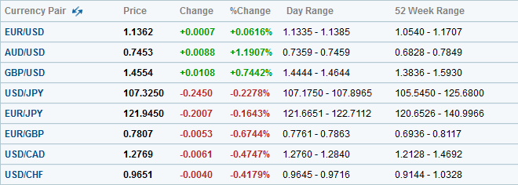
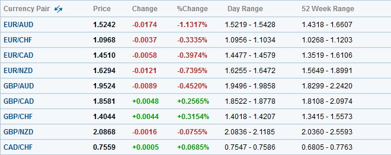

<!DOCTYPE html>
<html>
</html>
<head>
  <meta charset="utf-8">
  <meta http-equiv="X-UA-Compatible" content="IE=edge">
  <title>外汇站（fx-z.com） - 什么是外汇交易？</title>
  <meta name="description" content="">
  <meta name="viewport" content="width=device-width, initial-scale=1">
  <meta name="robots" content="all,follow">
  <!-- Bootstrap CSS-->
  <link rel="stylesheet" href="vendor/bootstrap/css/bootstrap.min.css">
  <!-- Font Awesome CSS-->
  <link rel="stylesheet" href="vendor/font-awesome/css/font-awesome.min.css">
  <!-- Google fonts - Roboto-->
  <link rel="stylesheet" href="https://fonts.googleapis.com/css?family=Roboto:400,300,700,400italic">
  <!-- owl carousel-->
  <link rel="stylesheet" href="vendor/owl.carousel/assets/owl.carousel.css">
  <link rel="stylesheet" href="vendor/owl.carousel/assets/owl.theme.default.css">
  <!-- theme stylesheet-->
  <link rel="stylesheet" href="css/style.default.css" id="theme-stylesheet">
  <!-- Custom stylesheet - for your changes-->
  <link rel="stylesheet" href="css/custom.css">
  <!-- Favicon-->
  <link rel="shortcut icon" href="img/favicon.png">
  <!-- Tweaks for older IEs--><!--[if lt IE 9]>
    <script src="https://oss.maxcdn.com/html5shiv/3.7.3/html5shiv.min.js"></script>
    <script src="https://oss.maxcdn.com/respond/1.4.2/respond.min.js"></script><![endif]-->
</head>
<body>
  <div id="all">
    <div class="container-fluid">
      <div class="row row-offcanvas row-offcanvas-left"> 
        <!--   *** SIDEBAR ***-->
        <div id="sidebar" class="col-md-4 col-lg-3 sidebar-offcanvas">
          <div class="sidebar-content">
            <h1 class="sidebar-heading"> <a href="https://fx-z.com">fx-z.com</a></h1>
            <p class="sidebar-p">介绍外汇相关的基本知识，告诉您如何进行自己的技术面和基本面分析，讲解先进的交易理念，并且为您阐述失败交易者与专业交易者之间的真正区别。 </p>
            <p class="sidebar-p">通过这些课程的学习，您将学会如何根据自己的优势来应用情绪分析，还将了解真实世界的事件会对货币汇率产生什么影响，央行在外汇市场中所发挥的作用，以及交易者在颇受欢迎的即期外汇交易中有哪些选择方案。 </p>
            <ul class="sidebar-menu">
                <!-- Link-->
                <li class="sidebar-item"><a href="https://fx-z.com" class="sidebar-link">首页</a></li>
                <!-- Link-->
                <li class="sidebar-item"><a href="cihui.html" class="sidebar-link">外汇词汇</a></li>
                <!-- Link-->
                <li class="sidebar-item"><a href="ebook.html" class="sidebar-link">获取外汇电子书</a></li>
            </ul>
            <p class="social"><a href="https://www.forextimechina.com.cn/zh?form=IZIN" target="_blank"data-animate-hover="pulse" class="external facebook"><i class="fa fa-eur"></i></a><a href="https://www.forextimechina.com.cn/zh?form=IZIN" target="_blank" data-animate-hover="pulse" class="external gplus"><i class="fa fa-gbp"></i></a><a href="https://www.forextimechina.com.cn/zh?form=IZIN" target="_blank" data-animate-hover="pulse" class="external twitter"><i class="fa fa-rmb"></i></a><a href="https://www.forextimechina.com.cn/zh?form=IZIN" target="_blank" title="" class="external instagram"><i class="fa fa-dollar"></i></a><a href="https://www.forextimechina.com.cn/zh?form=IZIN" target="_blank" data-animate-hover="pulse" class="email"><i class="fa fa-money"></i></a></p>
            <div class="copyright text-center text-md-left">
             
              
            </div>
          </div>
        </div>
        <!--   *** SIDEBAR END ***  -->
        <!--   *** DETAIL ***-->
        <div class="col-md-8 col-lg-9 content-column white-background">
          <div class="small-navbar d-flex d-md-none">
            <button type="button" data-toggle="offcanvas" class="btn btn-outline-primary"> <i class="fa fa-align-left mr-2"></i>菜单</button>
            <h1 class="small-navbar-heading"> <a href="https://fx-z.com/1-2.html">下一篇 </a></h1>
          </div>
          <div class="row">
            <div class="col-xl-10">
              <div class="content-column-content">
                <h1>什么是外汇交易？</h1>
                <p>
    <strong>什么是“外汇”？</strong>
</p>
<p>
    “外汇”是如今最常提到的“外汇兑换”一词的缩写，意即一种货币相对于另一种货币的价格。根据定义，所有外汇价格是指两种货币之间的关系，即一对货币。
</p>
<p>
    “外汇”一词可以与“FX”互换使用。两者如今都在使用中，并且具有相同的含义——外汇兑换。“FX”一词主要用于美国，而“外汇”一词直到近期都主要用于英国。美国银行及经纪商的专业交易者往往使用“FX”，而源于英国的“外汇”一词主要用于零售市场。另外，市场还使用“货币”一词，例如“我进行货币交易”或“货币市场有事发生”。
</p>
<p>
    外汇其实是指货币，或者更准确地说，是指两种面值不同的货币。外汇兑换中的“兑换”意味着用一部分货币价值换取不同部分的等值价值。兑换是指交易中的一方愿意用其篮子货币向另一方换取用其他货币计价的的等值货币。双方之间愿意兑换的价格是汇率。
</p>
<p>
    一种货币相对于另一种货币的价格被称为“汇率”，而不是“价格”，虽然“价格”一词同样有效并且较为常用。外汇是唯一一个用汇率代替价格的市场。
</p>
<p>
    <strong>什么是兑换？</strong>
</p>
<p>
    有些外汇兑换是指两篮子计价方式不同的货币；外汇交易可能就像在机场商店用 165 美元换取 £100 欧元一样简单。汇率是一英镑 $1.65。
</p>
<p>
    那么，汇率为什么不是一美元 £0.6061 英镑呢？其实这是相同的汇率，只不过表述方式不同（这是倒数，或 1 除以 1.65）。答案在于其他货币相对于英镑成本的历史报价惯例。第二次世界大战之前，英镑一直是数个世纪以来的基准货币，即用于判断以及对所有其他货币报价的中央货币。
</p>
<p>
    第二次世界大战之后，美元成为基准货币，而大部分其他货币根据一美元能获得多少单位外币来定价。
</p>
<p>
    通常，任何由您本国政府发行的货币都是“外币”。研究外汇的常规方法是询问：“我用固定数额的本国货币可以换取多少单位外币？”这正是旅行人士或进口商看待外汇的方式。但由于美元目前几乎是对其他所有货币定价的基准货币，美元在许多（虽然不是全部）货币对中排在首位。货币对中的首位货币通常是重要货币，第二位货币是重要性更低的货币。
</p>
<p>
    将一种货币名称放在首位意味着固定金额用该货币计价，而另一种货币的金额可变。换言之，首位货币是基准，而您通过相关比例来获取第二位货币的价格。当欧洲货币联盟决定以“欧元/美元”和“欧元/日元”等方式报价时，这是刻意将欧元作为货币对中更重要的货币。
</p>
<p>
    规则在于，无论货币对中哪种货币被排在首位，该货币都在数值变大时走强、数值变小时走低。如果英镑数字变大，例如从 1.6000 到 1.6500，根据定义，这意味着英镑走强、美元走弱，因为在这一货币对中，完整的报价应该为 GBP/USD。将货币对报价为 $1.6000 至 $1.6500 是正确的，意即一英镑原本花费 $1.6000，而现在花费 $1.6500。记者通常采用将美元放在报价首位的惯例，虽然经纪商和分析师往往不会插入货币符号。
</p>
<p>
    这同样适用于欧元（EUR/USD），因此数字更高意味着欧元对美元走强。您可以说 EUR/USD 从 1.3200 上涨至 1.3900，意味着美元成本更高。如果您是一位外汇新手，您可以在首位货币前设置一个虚拟货币符号以弄清您的方向。因此，货币对报价现在看起来像 $1.3200 至 $1.3900。
</p>
<p>
    由于历史惯例，英镑、欧元、澳元和新西兰元是几种不让美元排在首位的主要货币。所有其他货币都是相对于美元报价，例如 USD/CHF = 美元对瑞士法郎。
</p>
<p>
    以下是雅虎财经的主要货币列表。雅虎财经是众多提供专业及零售外汇市场信息的供应商之一。其他包括经纪商在内的提供商拥有自己的版本。
</p>

<p>
雅虎财经提供的主要货币对
</p>
<p>
    <strong>交叉汇率</strong>
</p>
<p>
    数十年前，交叉汇率是指任何不包括您本国货币的货币对。例如，对英国或欧洲人而言，美元/日元汇率正是交叉汇率。
</p>
<p>
    不过，如今对交叉汇率的普遍定义是指任何不包括美元的货币对。因此，USD/JPY 汇率是一种“主要”汇率，而且不会被英国或欧洲人视为交叉汇率，而 AUD/CAD 将被所有人视为交叉汇率；其中，澳大利亚和加拿大人也持有相同的观点，即使汇率包括其本国货币。
</p>
<p>
    这种用于定义交叉汇率的惯例并未被所有地区接受；您将在新闻和网站上见到对交叉汇率定义不同的列表。美元账户持有全球约 70% 的政府资金储备以及 70% 的国际贸易额，因此将美元作为所有主要汇率的因素之一也不失偏颇。实际上，美国国外的美钞和银行存款账户多于国内，因此，认为美元是一些非美国国家最常使用的货币的看法或许是正确的。不过当有人提到“欧元”时，他肯定提到的是 EUR/USD，而不是 EUR/GBP，后一项货币对中必须定义第二位货币。
</p>
<p>
    请查看雅虎财经的欧洲交叉汇率。它是一份典型的欧洲国家汇率列表：
</p>

<p>

    雅虎财经外汇交叉汇率
</p>
<p>
    <strong>不断演变的做法</strong>
</p>
<p>
    作为一家顶级新闻和数据提供商，雅虎将非美元交叉货币纳入“主要世界货币”的范围。有一项实际问题是，如果您交易欧元/美元，您只需说“欧元”且无需提到“美元”即能被人理解。不过，如果您的实际含义是“欧元/日元”，您必须说明第二位货币的名称。
</p>
<p>
    <strong>交易</strong>
</p>
<p>
    当您去机场商店将您的本国货币兑换为另一种货币时，您并未交易。您是一位价格接受者。商店标志告诉您，您得到的汇率是固定的。您要么接受，要么离开。
</p>
<p>
    这并不是交易。交易是指您与对手来回拉锯，直到您发现价格已将双方的不满降到最低的过程。交易涉及协商一个令双方感到满意的价格，并且包含玩游戏、欺骗和其他招数。您出价想买入的标的在别人看来可能价值更高，或者您卖出的标的在其他意向买入者看来价值更低。当最终价格达成一致且令双方感到满意时，无论双方是通过握手还是正式文件达成一致，你们之间的合约达成，你们双方互相在指定场所和指定地点将将自己手中的一篮子货币交换给对方。通常，实际兑换是指两种货币发行国从一个账户至另一个账户的转账。
</p>
<p>
    <br/>
</p>
<p>
    <br/>
</p>
              </div>
            </div>
          </div>
        </div>
      </div>
    </div>
  </div>
  <!-- JavaScript files-->
  <script src="vendor/jquery/jquery.min.js"></script>
  <script src="vendor/popper.js/umd/popper.min.js"> </script>
  <script src="vendor/bootstrap/js/bootstrap.min.js"></script>
  <script src="vendor/jquery.cookie/jquery.cookie.js"> </script>
  <script src="vendor/owl.carousel/owl.carousel.min.js"></script>
  <script src="vendor/masonry-layout/masonry.pkgd.min.js"></script>
  <script src="js/front.js"></script>
</body>